Chapter 9: Room Investigatiions
R o o m I n v e s t i g a t i o n s
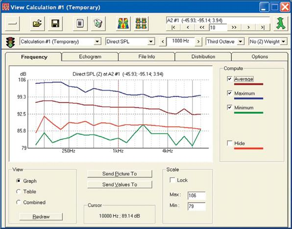
179
EASE 4.3 User’s Guide & Tutorial
Chapter 9. Room Investigations
Now it is time to investigate the many ways EASE and EASE JR offer to simulate and display the acoustical and electro-acoustical per-formance of the room and its loudspeaker system.
In this section, we will cover all the investigations that are available to both EASE and EASE JR users. In the next section, Advanced Acoustical Investigations, we’ll take up the investigations available only to EASE users.
New Mapping Conventions
Before we go on let’s explore several of EASE 4.3’s significant improvements.
EASE and EASE JR 4.3 now offer a choice of Mapping Conventions. Previous ver-sions used a Multi-Tone excitation signal for the simulations; all power was inserted in all frequency bands. In this method the excitation signal is comparable to a den-sity signal with a White Noise spectrum.
EASE 4.3 introduces a Broadband Pink Noise excitation signal and sums the results according to RTA conventions, a technique commonly employed by RTA ‘s using a Pink Noise signal.
A detailed discussion of these two methods is beyond the scope of this Tutorial.
The use of Broadband Pink Noise also enables EASE to offer accurate A-Weighted response curves.
The default method for all new projects is the Broadband Pink Noise method. Proj-ects created in earlier versions of EASE will open using the Multi-Tone method. These projects mapping method can be switched to Broadband Pink Noise in the Settings tab of the Room Data folder shown here.
To access the Settings tab,either select Room Info/ Data from the Main View pull down menu or right click on the screen in Edit Project and select Room Data from the Mouse menu.
New Level Conventions
The change in Mapping Conventions also dictated a change in the Loudspeaker Level Conventions to accommodate the Pink Noise signal.
Projects created in earlier versions of EASE will open in 4.3 with the earlier multi-tone Mapping settings. Projects created in 4.3 will open with the Mapping Convention set to Broadband Pink Noise .
Note:If you open an older project and switch to the Broad band Pink Noise mapping method and enter either Area Mapping or Room Mapping, a prompt will ask you to Check Data first. When you attempt to Check Data, a second prompt will inform you that the loudspeaker power setting exceeds the maxi-mum power allowable for Pink Noise Mapping. You will need to open Edit Project, select one of the project’s loudspeakers, open its Properties folder and change its power level settings.
All the Ele Power figures will be shown in red as an indication they are set to high; see example on the next page. The easiest and recommended way to set the levels to ones accept-able for Pink Noise Mapping is to press the Flat Max button in the Level section.
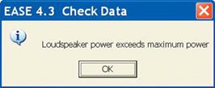
If the project has more than one loudspeaker the Loudspeaker Power Exceeds Maximum Power prompt will again appear; clicking OK will highlight a second loudspeaker and open its Properties folder. Again select Flat Max and OK. Ease will continue to step through the loudspeakers until all the power levels have been adjusted to the Pink Noise level convention.. It really goes quite fast.
180
Chapter 9: Room Investigations
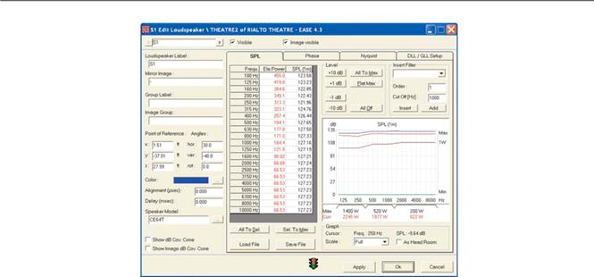
New STI Intelligibility Calculations
EASE and EASE JR now calculate STI using the MTI (Modulation Tranfer Index) values in accordance with the current IEC16 Standard IEC60268-16:2003. ALcons and RaSTI intelligibility figures are then derived from the STI figures.
This method allows EASE and EASE JR to caculate STI, ALcons and RaSTI intelligibility projections in both open areas and closed spaces..
Area Mapping
For the first part of this exercise we will study Area Mapping using the Theater 1 example. Room Mapping will be covered later.
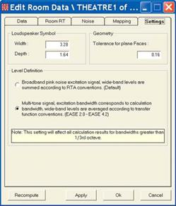
Open EASE, if it isn't already open, and either select Open Project from the File pull down menu or use the desk top icons to find and select Theater 1. When the Draw Room prompt appears answer No, unless you want to reacquaint yourself with the room model. You do not need to Draw the room at this time, Instead, you can go direct to the Calculations pull down menu and select Area Mapping.
Before we go on let’s check the default settings for the Mapping functions. They are found in the Edit Data folder.
Either select Room Info/ Data from the Main View pull down menu or right click on the screen in Edit Project and select Room Data from the Mouse menu.
The Settings tab contains the radio buttons that allow you to select either Broad-band Pink Noise or Multi-Tone excitation signal. Broadband Pink Noise is recom-mended. The Settings tab also includes controls for the size of the Loudspeaker Symbol used in Edit Project and for the programs Tolerance for Plane Faces. We suggest using the default settings for these controls.
181
EASE 4.3 User’s Guide & Tutorial
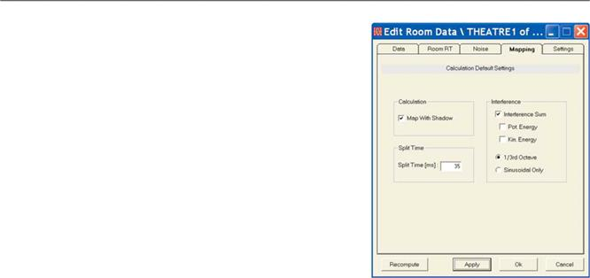
Let’s check out the Mapping and Noise tabs next. Click on the Mapping tab.
The Split Time [ms] setting determines which reflections are considered di-rect sound during the calculations and which ones are reverberant sound. Since the D/R (Direct Sound / Reverberant Sound) ratio is a key factor in de-termining intelligibility and in evaluating other aspects of the system's per-formance this is an important setting.
Early reflections, those arriving within 15 to 40 msec of the direct sound, im-prove intelligibility while reflections arriving later detract from intelligibility. We suggest 35 msec as a good compromise between the 15 msec figure fa-vored by some acousticians and the 40 ms favored by others. Change the setting from 10 to 35.
Map With Shadow introduces the effects of any shadowing into the simula-tion. In the Theater1 model, for example, the effects of the shadowing caused by the balcony are visible only if Shadowing is turned On. Since simulations run without shadowing are misleading if there are obstructions in the room, many users automatically turn Shadowing On all the time.
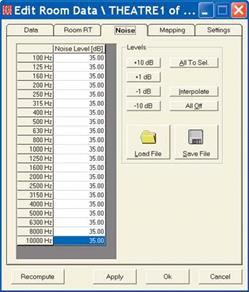
The Interference section establishes how the energy levels are calculated. When Interference Sum is not checked, the energy levels are calculated by simple energy addition of the direct sound from one or more loudspeakers.
Mathematically, this translates into a "sum of the squares" calculation where the contribution from a source is first squared and then added to the squared contributions from other sources. All phase information is lost in the process.
Turning Interference Sum On by placing a check in the box reverses the mathematical operation and all source contributions are added first in a complex manner and then the resulting complex sum squared. This retains all the phase effects such as cancellations and additions. Run a Direct Sound simulation with both Interference Sum settings and you'll see a vast difference. Note that after you have changed the settings, you need to rerun the simulation to actually see the results.
The Pot. Energy and Kin. Energy options allows the calculations to be run using only the pressure part (potential) of the energy or the velocity (kinetic) part or both parts when both are checked. A thorough explanation of this as-pect of the program is beyond the scope of this manual. Our recommenda-tion is to use Interference Sum and the 1/3rd Octave bandwidth.
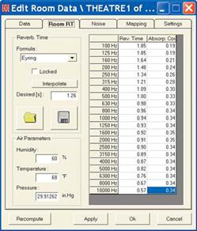
The Noise tab allows you to set the default noise levels for the project. Note how easy it is to raise or lower individual frequency levels or all levels simul-taneously by using the Level buttons.
The Load File icon allows you to import measured noise data if it is available and use it in the simulations. You can also Save the noise data file and then use it at a later date in another project.
We reviewed the Room RT tab earlier while constructing our Model_1 Room. If you skipped that portion of the tutorial, return to page 62 to review it.
182
Chapter 9: Room Investigatiions
Now it’s time to open the Area Mapping window. Return to the Main window and select Area Mapping from the Calculations pull dopwn menu.
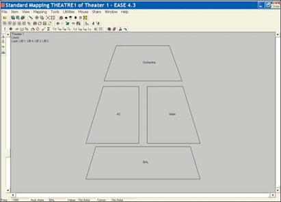
it’s possible your screen may not show the Audience Area names. If it does not, go to the Items pull down menu and turn on Audience Area Labels or use the Tool Bar icon to turn them On. Note that the four Audience Areas are not simply labeled A1, A2, etc. EASE allows you to use labels that are more descriptive and we strongly advise you to do so for the Audience Areas, Loudspeakers and Listener Seats. It makes everything so much easier.
Moving Audience Areas
Notice that the Audience Area labeled BAL, the balcony Audience Area, does not overlap or shadow the two main floor Audience Areas (areas A2 & Main) as it does in the actual room. This is because EASE allows you to move Audience Areas for display purposes. If you want to try this out, return to the Main menu and open the Edit Project program. Then select Area Layout from the Edit pull down menu to view the Audience Areas. Pick one of the Audience Areas and then select Move from the Edit pull down menu. The cursor will now turn from a pointer into a pair of pliers. Use the pliers to grab the selected Audience Area and move it around the screen. It's that easy to re-arrange Audience Areas for easy viewing.
Mapping
Clicking on any one of the Mapping icons in the Tool Bar section of the Area Mapping window will initiate the Mapping procedure and open the Settings dialog box.
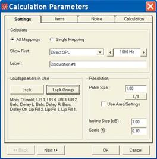
This window and the ones that follow remind you of the parameters that need to be set up before a simulation. The Settings tab is where you select the frequency of the simulation, choose what loudspeaker(s) will be used and decide upon the resolution.
You also are presented with the choice of running a Single map or of using the All Mappings feature. When All Mapping is selected, the program gathers all the data it needs to quickly display all the simulations available at any frequency. This is a great time saver when you are doing a detailed analysis. We suggest using the All Mapping option and selecting Direct SPL as the measure to show first.
Clicking on the Loudspeaker button opens a list of the loudspeakers used in the model and gives you the opportunity to select which ones will be used in the sim-ulation.
We’ll discuss the Resolution later. For now accept the default setting. Click on Next to advance to the next setup window.
183
EASE 4.3 User’s Guide & Tutorial
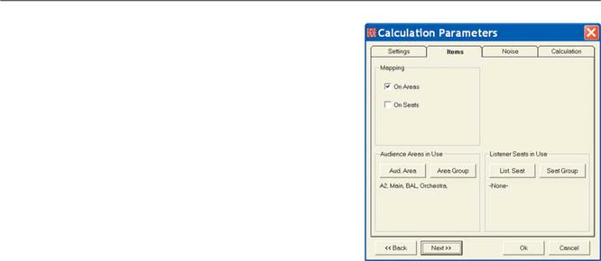
The Items tab lets you choose what Audience Areas and Listener Seats will be included in the simulation.
Click on the Aud. Area button and select all four of the Audience Areas. Note that the easy way to do this is to right click on the OK button to select all of them and then left click on OK. To select several of the Areas, hold down the Ctrl button and make your selection using the left Mouse button.
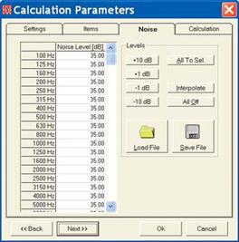
Then either open the Noise tab or click on Next to open it.
The Noise setup window allows you to set the noise levels (modify the de-fault settings established in Room Data) that will be used in intelligibility cal-culations. These are important to accurate Intelligibility projections, so don’t overlook them. Accept the default settings for now and click on Next.

The Calculations window allows you to make further adjustments to the de-fault settings established in Room Data. Shadowing can be turned On or Off. When Shadowing is On, EASE takes into account the shadowing effect of any objects in the room, such as columns and balconies. When it's Off, it doesn't.
Under Interference, make sure Interference Sum and Third Octave are checked and the Split Time is set to 35. Refer back to page 182 for further information on these settings if you feel you need it. For now, accept the de-fault settings.
Finally, click on OK to run the simulation.
184
Chapter 9: Room Investigatiions
It will take a minute or two for the program to gather all the data need to render the Direct SPL Map. Note that the program scans each Au-dience Area individually and then goes on to the next Audience Area. When the simulation is complete, the window shown below will open. Notice that the View Calculations control window essentially covers the actual SPL Map.
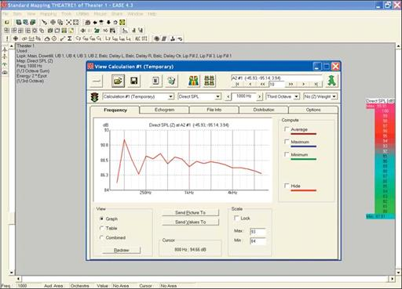
To view the SPL Map click on the big minus sign icon on the left side of the View Calculations control screen to minimize it; see below.
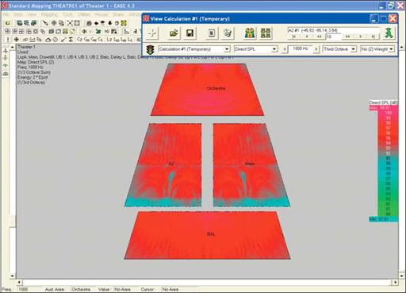
185
EASE 4.3 User’s Guide & Tutorial
Display Methods
Before we go on let’s take a look at the various mapping display methods offered by EASE. Control of the display method is provided by the four Tool Bar display icons or by using the View pull down menu.
The default display method and the method we have used so far in the Tutorial is commonly called Color Patches; the View pull down menu lists it as Patch Grid and Painted.
Another method uses Isobars instead of Patches. The isobar graphic below was made by turning Painted (Color) off and Labels On.
Note that if you going to use a black & white Isobar display, Labels must be on or all you will see is blank areas.
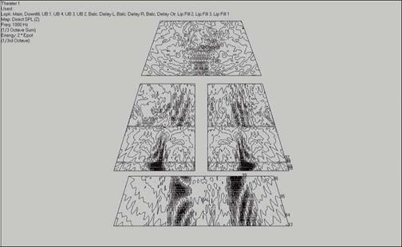
The next graphic was made with with Patch Grid turned On and Coloring turned Off. It plainly shows why the method is called Patches or Patch Grid. EASE scans each square (Patch) sequentially to develop the display.
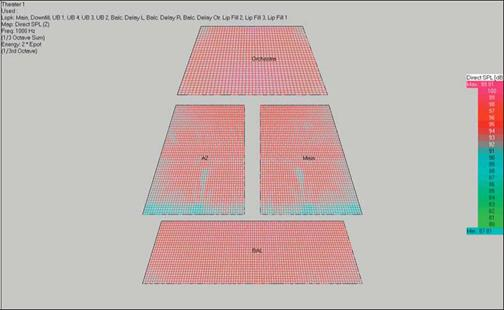
The size of each Patch determines the resolution and the amount of time needed to do the calculation. The smaller the Patch size, the higher the resolution and the longer the calculation takes.
186
Chapter 9: Room Investigatiions
Control of the resolution is provided by the first Calculation Parameters setup window. See below.
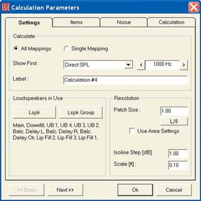
We have been using 1 for the patch size and 1 dB for the Isoline display. The display shown below was made using a patch size of 3. No-tice the loss of resolution.
Notice that the setup window also contains a Use Area Setting check box and a L/8 button. The Properties window for Audience Areas al-lows you to define the scan resolution for each individual Audience Area. Checking Use Area Settings tells the program to use these set-tings instead of the Patch Size setting. Pressing the L/8 button changes the resolution (the patch size) to 1/8 wavelength at the frequency chosen for the simulation (.14 feet at 1000 Hz and .07 feet at 2000 Hz, for example).
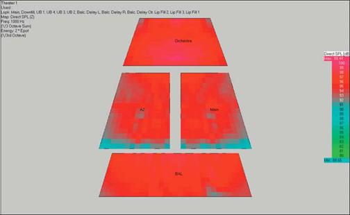
Note that in all the Mapping displays, you can obtain a readout of the level at any point by left clicking on that point; right clicking will both readout the level and write it on the display.
187
EASE 4.3 User’s Guide & Tutorial
View Calculations Window
The Frequency tab display is showing us the Direct SPL values for all frequencies at the location shown.
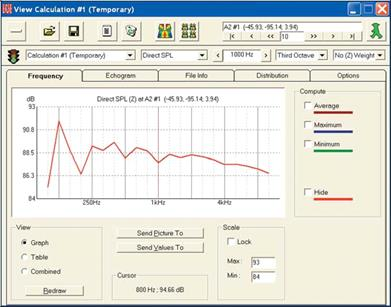
Note the four color bars to the right of the graph. The top three allow you to look at the Average, Minimum and Maximum SPL levels for the area scanned. The bottom one allows you to turn off the red SPL curve for the individual location. The result of turning Average, Minimum and Maximum On is shown below.
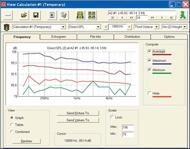
Note that moving the cursor to any point on one of the curves will produce a readout in the Cursor field at the bottom of the window giving you the frequency and Direct SPL level at that point.
The View section in the lower left of the window allows you to change the display window from a graph to a tabular listing of the same infor-mation or to a side by side display of both. Try it out.
The Send Picture To button is a quick way to save the chart/graph to the Clipboard as an electronic file or to send it to the EASE Page De-signer. The Send Values button saves the single values to the Clipboard for further post processing.
188
Chapter 9: Room Investigatiions
The File Info tab contains a statistical summary of the setup parameters, including the loudspeakers used, their locations and output levels in an ASCII text format that can be saved and opened in other programs and then printed.
The Echogram tab is empty at this time and will be until an Echogram is created. Echograms are a feature available only to AURA users.
We'll cover them later in the AURA section of this manual.
The Distribution tab opens the distribution window which displays a bar graph representation of the selected parameter, Direct SPL at 1000 Hz in the example shown below. As you can see, it enables you to quickly determine what percentage of the mapped areas fall within cer-tain criteria. In this example, 90 % of the total area falls within 94 to 98 dB (plus or minus 2 dB) .
This window is your answer to the specifications that call for coverage to be "flat within +/-__dB". Use the Cursor and Cursor value readout below the bar graph to obtain exact readings.
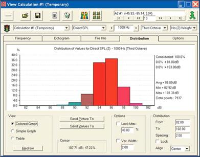
If you find it hard to read the exact figures from the graph, click on Table to open the Distribution Table which gives you exact figures.
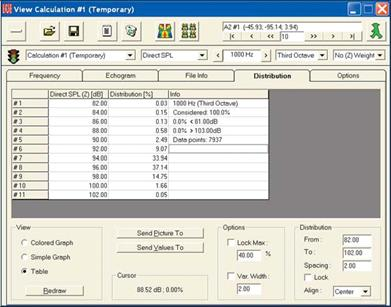
189
EASE 4.3 User’s Guide & Tutorial
Now, lets take a closer look at the top Tool Bar portion of the View Calculation window.
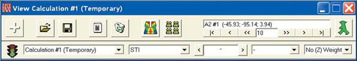
The large button on the left (the + button in the above graphic) opens and closes the bottom Evaluation Display portion of the window. It al-lows you to close the bottom portion of the window, so you can see the Map.
The Open Folder icon is used to open previously created .emp Mapping files for review. The Floppy Disk icon button next to it is used to save the current simulation as a .emp Map file. The Notepad icon is used to save the current file in an ASCII .txt format. The Waste Basket icon is used to delete the current simulation file from the View Calculation module and choose another one from the File Listing drop down menu.
The left colorful Map icon is used to draw a new Map. Lets try it out. Open the drop down menu directly below the Redraw button and se-lect a new simulation type. Note that you have a wide variety to choose from. Selecting one, STI for example, and then pressing the Re-draw button will quickly produce an STI map in place of the Direct SPL map. Since we used All Mapping, the program doesn't have to rerun the entire simulation. All it has to do is scan the data it collected and render the drawing, a process that takes only a few seconds.
The right colorful Map icon allows the selection of all simulations and all frequencies and frequency resolutions. Pressing the icon, opens a drop down menu giving you the choice of Render All or Send to EASEPaD. Render All will render all the Maps selected and Send To EASEPaD will both render the Maps and send them to EASEPaD for further processing.
Selecting one of the two choices will open the selection menu shown below. The buttons and the selection fields make it easy for you to select the specific Maps you want to see or save. Try it out. You'll find it a very useful tool for putting together presentations.
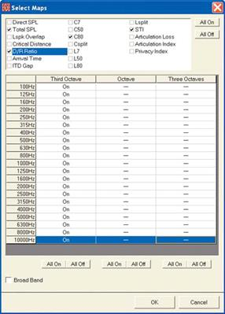
190
Chapter 9: Room Investigatiions
The Frequency drop down menu allows you to quickly select the center point of the frequency band that will be used in the next simulation while the Bandwidth drop down menu determines the width of the frequency band.
Note that you have a choice of Third Octave, One Octave, Three Octaves, Broadband and a number of specific frequencies. One Octave will average the results over one octave, while Broadband will show the results averaged across the entire spectrum. Custom bandwidths can be generated using the Frequency menu to set the lower frequency limit and the numerical frequency listings to set the upper limit, 1000 Hz plus to 5000 Hz for example.
The wider the bandwidth, the less apparent the effects of comb filtering. As a general rule, simulations run with a 3 octave bandwidth come closest to simulating the variations you will hear while "walking" the room during the final commissioning.
The location section of the tool bars shown below identifies the location of the graph shown in the display section of the window and allows you to change the location.
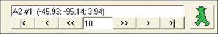
In this case we are looking at the 1st point in Audience Area A2. The location coordinates follow. The l<, <, < < and >>, >, >l buttons allow you to move backwards and forwards through the points scanned. The number field allows you to choose the size of the step.
The Walker, when activated, displays the actual location.
The Weight drop down arrow allows you to select between “unweighted” frequency curves and A-Weighted curves. See below.
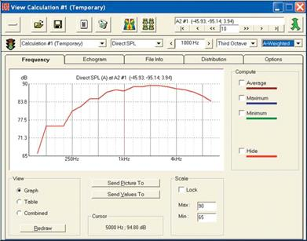
191
EASE 4.3 User’s Guide & Tutorial
Before we go on let’s take time to save the mapping file. You may have noticed that in the View Calculations window the word “Temporary” followed the name of the calculation. This is the program’s way of telling you that the Mapping file you created has not been saved and will be lost if you close it without saving it.
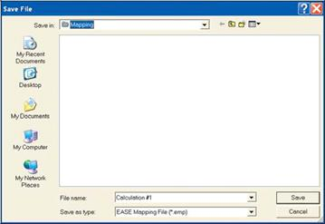
Clicking on the Floppy Disk icon will open a familiar Window Save dialog box. Name the Calculation file and then Save it as a .emp file. To open the file at a later time, open Area Mapping and select Load EASE Mapping from the File pull down menu. Then browse to the file and select it.
STI Speech Transmission Index
STI has largely replaced ALcons as the preferred method of measuring intelligibility. EASE and EASE JR now project STI using the MTI (Modulation Transfer Index) in accordance with IEC Standard 60268-16:2003.
Select STI from the drop down measurement type field in the View Calculations window to calculate STI from the data that was gathered from the All Mapping simulation. Note that the resultant display shows both the single STI figure and the frequency band sensitive MTI fig-ures.
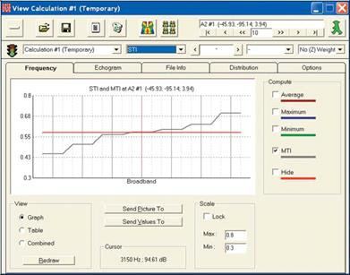
If you need the exact STI figure, click on Table.
192
Chapter 9: Room Investigatiions
Notice that the Calculations Control window now includes an Options tab. Clicking on it opens the STI Options folder shown below.
It allows you to choose between the “Standard” STI and ones calculated for either Male or Female voices. Other calculation options include STIPa Male, STIPa female and RaSTI simulations. You also are given the choice of considering the Noise Floor and/or the effects of Sig-nal Masking in the STI simulations.
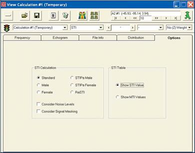
Please check these out to become familiar with the differences.
If you want to see the STI Area Map, click on the Render icon.
Note that changing from one measure to another in the Area Map is a 2 step procedure. First, you need to select and calculate the meas-ure from the data gathered during All Mapping and then you need to Render (redraw) the map.
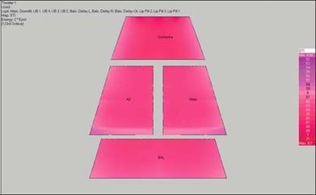
A reference guide for interpreting STI figures follows:
0.75 to 1
Excellent
0.6 to 0.75
Good
0.45 to 0.6
Fair
0.3 to 0.45
Poor
0 to 0.3
Unacceptable
193
EASE 4.3 User’s Guide & Tutorial
ALCons
EASE and EASE JR 4.3 derive ALCons (% Articulation Loss of Consonants) from the Speech Transmission Index using the Farrel Becker equation. Refer to Appendix A, ALCons STI in the EASE 4.3 Manual (C:/Program Files/EASE 4.3/EasePath/Ease4.3Manual) for details on the relationship between STI and other related measures such as RaSTI and STIPa.
A typical ALCons map appears below. In ALCons, Green is good. To be more specific:
Percent ALCons
0% to
3%
Excellent
3% to 7%
Good
7% to 15%
Fair
15% to 33%
Poor
Above
33%
Unacceptable
Note: This scale corresponds with the standardized STI values, but experience has shown that good intelligibility is achieved with less than 12% ALcons and very good intelligibility with ALcons of 7% or less.
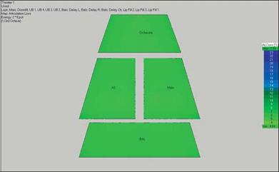
C (Clarity) Calculations
C (Clarity) calculations offer several ways to evaluate the acoustic performance of a room and its loudspeaker system. They are widely used in Europe.
C7 is equivalent to the D/R ratio widely used in the U.S. and represents another way to look at the strength of the Direct Sound field. It displays in dB the ratio of direct and reverberant sound using a Split Time of 7 ms. Values above -15 dB show good localization (a good D/R ratio). The closer the value comes to 0, the better the localization.
C50 is used to project speech intelligibility. It displays the ratio of energy before and after 50 ms; i.e., its similar to Alcons with a 50 ms Split Time. Any value above 0 dB in a room with normal reverberation represents good intelligibility. In rooms with higher than normal reverbera-tion, any value above -5 dB is considered good.
C80 is often called a clarity ratio. It uses an 80 ms Split Time to predict the articulation (clarity) of different types of music. In other words, it provides a look at the room's musical performance. A brief explanation follows.
Musical instruments can be divided into four basic types:
1. Blown instruments (e.g., organ, tuba, clarinet, etc.) These instruments have a slow attack and slow decay.
2. Bowed instruments (e.g., violin, viola, cello, bass etc.) These instruments have slightly quicker attack and slow decay.
3. Plucked instrument (e.g., guitar, string bass, harpsichord, etc.) These instruments have quick attack and medium slow decay.
4. Percussive instruments (e.g., piano, drums, electronic instruments, xylophone etc.) These instruments have a quick attack and a quick decay.
194
Chapter 9: Room Investigatiions
The scale for interpreting C80 follows:
• 0 +/- 2 dB is ideal for organ or blown instruments played at a slow rate of speed. This is perfect for organ recital halls
• 2 +/-2 dB is ideal for bowed instruments and is best shown by a room made for classical or symphonic instrumental music. The speed of the music is quicker. The music of live choirs is also good at this level. This would be good for traditional churches
• 4 +/-2 dB is ideal for plucked instruments. The speed of the music is quicker as well as more modern. This would be described as folk music or in churches as Light Contemporary. This would also cover light popular music such as Light Jazz
• 6 +/-2 dB is ideal for percussive instruments. This can be described best as Rock and Roll. In churches this would be known as Full Contemporary.
For good musical performance, the number should not exceed +8 dB at any location. A C80 plot for Theater1 follows.
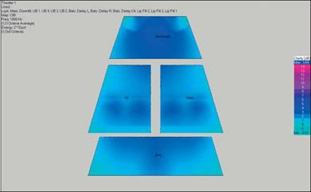
Csplit
Csplit offers a way to look at the energy ratios before and after the selected Split Time. It gives you the opportunity to see the effect of dif-ferent Split time settings. The selected Split Time in this case, of course, is the Split Time we set up before running the All Mapping simula-tion (35 msec.)
D/R Ratios
D/R Ratio shows the ratio of direct to reverberant sound in terms of dB. Zero dB indicates the sound levels are the same. Numbers less than 0 indicate the reverberant sound level is higher than the direct sound level. Numbers greater than 0 indicate the direct sound level is higher. Note that in Theater 1 the reverberant level is higher than the direct sound level. This is not unusual.
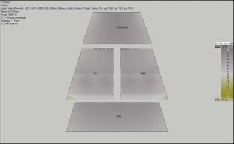
195
EASE 4.3 User’s Guide & Tutorial
Critical Distance
Critical Distance displays the ratio of Direct to Reverberant sound in terms of distance. Critical Distance is the distance in space at which the Direct and Reverberant sound levels are equal. This is displayed as a 1. Figures of more than 1 indicate the reverberant sound level at this distance is higher than the direct sound coming from the loudspeakers. Figures lower than 1 indicate that at this distance from the Loudspeakers the Direct Sound level is higher than the level of the reverberant field.
A Critical Distance plot for Theater 1 appears below. Note all the figures are above 1, another indication that the reverberant field is higher in level than the Direct Sound.Pressure Levels
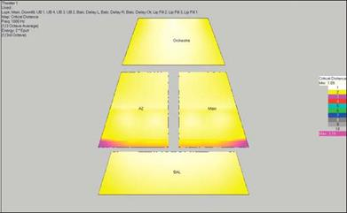
Pressure Levels L7, L50, L80, Lsplit
The L7, L50 and L80 simulations allow you to look at the sum of the direct and reverberant sound energy within the specified time; for ex-ample the first 7 msec when L7 is used. Lsplit uses the split time set up for the simulation, in this case 35 msec. In other words, Pressure Level simulations are similar to the C7, C50, C80, Csplit calculations, except they show you the total sound during the specified period.
Total SPL (SUM)
Sum or Total SPL displays the sum of the Direct and Reverberant sound energy in dB. In other words, it displays the total sound level.
Don't be surprised at the small variation between the minimum and maximum levels. It's normal.
Arrival Time
Arrival Time (First) shows the arrival times of the direct sound from the loudspeakers in terms of msec. It is extremely useful in determining the amount of delay needed in distributed loudspeaker systems. Exact readings can be obtained by clicking on the screen with either the right or left mouse button. The left button "reads out" the time; the right button writes it on the screen.
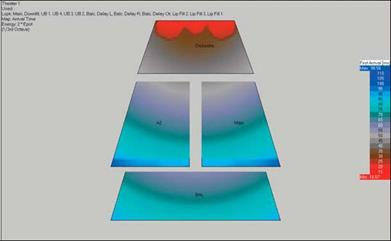
196
Chapter 9: Room Investigatiions
Lspk Overlap
Lspk Overlap shows the number (quantity) of loudspeakers of comparable intensity providing sound at a specific location. A value of 1 indi-cates that there is no overlap. Values greater than 1 indicate the amount of overlap. As a general rule, values of 1.5 or greater indicate that comb filtering or other undesirable interference behaviors may be expected at that location. A Lspk Overlap display for Theater 1 follows.
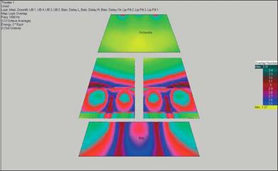
ITD Gap
ITD Gap displays the difference in arrival times between the first two direct sound arrivals. This information is useful in determining the proper placement of loudspeakers and the delay times needed in distributed loudspeaker systems. Note that we have added to this display a number of value readouts.
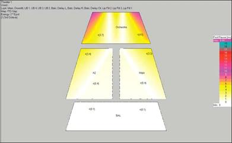
197
EASE 4.3 User’s Guide & Tutorial
Aiming
Aiming produces coverage isobars on the Audience Areas as an aid to aiming the loudspeakers. It is not included in the drop down meas-urement selection menu we have been using since it is more of an overlay than a true map.
To turn Aiming On, either select Aiming from the pull down Mapping menu in the Standard Mapping window or use the Tool Bar icon.
Coverage isobars will quickly appear on top of the map being viewed at the time you turned On Aiming. They will reflect the parameters used in the previous simulation; loudspeakers used, frequency, shadowing, etc.
The heavy squares in the display shown above represent the aiming points of loudspeakers aimed directly at one of the Audience Areas.
As you can see not all the loudspeakers are aimed at points within the Audience Areas.
This graphic was made with Shadowing turned On. The blue lines are calling your attention to the shadowing effects of the balcony and its location.
The Aiming display comes with several options. Right click on the screen to open the Mouse menu and select Options or press F9 to open the Options menu. Then select the Items folder. Note that you have a choice of -3 dB,- 6 dB or -9 dB coverage lines. You can also turn the Radii On or Off. Make whatever changes you want, then click on Apply to see the change. If you like the new effect, click on OK.
Be aware that the Aiming overlay will remain On until you turn it Off.
Auralize Direct Sound
One of the interesting features offered by both EASE JR and EASE is the ability to auralize Direct Sound. This features allows you to quickly audibly check loudspeaker alignment and level adjustment in multi-loudspeaker systems. It can be activated from either Area Map-ping or Room Mapping.
We'll use Area Mapping. Return to the Main window and select Area Mapping from the Calculations pull down menu. Then, select either Direct SPL or Recalculate and proceed through the setup windows. The program needs to know what loudspeakers will be used in the au-ralization.
When the simulation is complete and the View Calculations window appears, close it. Then open the Tools pull down menu, select Aural-ize Direct Sound and use the mouse to select a spot in one of the Audience Areas. (Note that the cursor changed into cross hairs when you selected Auralize Direct Sound.) Clicking on a spot in one of the Audience Areas with the left mouse button will open the Auralization control window shown at the top of the next page.
198
Chapter 9: Room Investigatiions
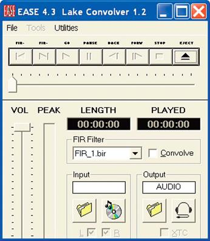
Unless you have previously changed the default settings, only the Eject button will be active. Under normal opera-tion (the default settings) it acts as a procedural start but-ton by loading the FIR Filter and then activating the Go button.
Now, it's time to have a little fun. Run several auraliza-tions at different spots in the audience with all of the loud-speakers turned On. Note that the response at each location is stored as a FIR Filter file in the program and that you can quickly and easily switch between the differ-ent FIR files.
Before you can proceed with the direct sound auraliza-tion, you need to select the Input Signal that will be used. Click on the File Folder icon and select the Male Voice .Wav file.
Then press the Eject button to reset the system and acti-vate the Go button. Press the Go button and listen to the Auralization over your computer’s loudspeakers.
Note that you may have to turn up the level on your PC's sound card to hear the Direct Sound auralization and that you are listening to only Direct Sound; no reflections are included. To hear the reflections, you must have EASE and EARS.
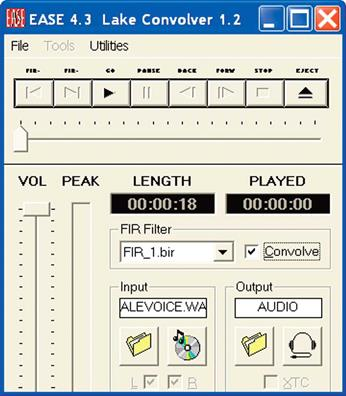
You will find that the loudspeaker system is quite well aligned and balanced.
Then open, if it is not open, the Edit Project module. Se-lect the center balcony loudspeaker (Balc. Delay Ctr) and insert a 200 msec delay.
Select the loudspeaker and then open its Properties folder using the Mouse menu. Change the Delay Time from 54 to 200 msec and OK. Now hit F6 to Apply and Save the change . Return to the Area Mapping window and Acquire Data using the File pull down menu.
Now, do several Direct Sound auralizations with the new settings. You'll notice a big difference.
199
EASE 4.3 User’s Guide & Tutorial
Ray Tracing
Ray Tracing is an often used concept in CAD programs for the rendering of illuminated objects. In EASE, Ray Tracing is used to study the propagation of sound rays. Rays are released into the room and each Ray's path is traced until it reaches predetermined limits.
Ray Tracing allows you to study reflection patterns within the room by emitting rays whose reflection paths can be viewed and investigated. The key words in the previous sentence are "reflection patterns". The Ray Tracing routine does not allow you to investigate reflections that hit a specific spot within the room. Comparatively few rays are needed in Ray Tracing to produce the quantity of rays needed for reflection pattern studies and for the Movie module. Consequently, Ray Tracing reflection pattern studies are relatively quick to make. Only a few hundred rays and low order reflection orders are needed. The maximum for EASE JR users is 1000 rays and Third-Order reflections.
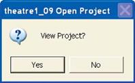
To start Ray Tracing, if the Edit Project module is open close or minimize it and then return to the Main menu and open the Calculations pull down menu. Selecting Ray Tracing will open the Prompt shown to the right.
It's asking if you want to be able to look at the Rays as they are being drawn. Let's say Yes.
This will open two windows, the main Ray Tracing control window and the Ray Tracing View
Project window; see below.
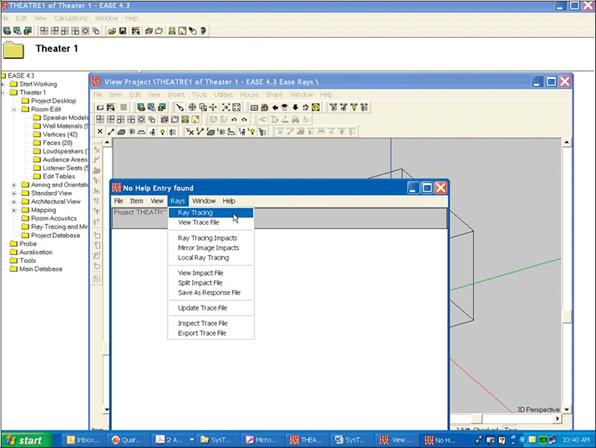
Select the Rays pull down menu in the Ray Tracing Control window and then click on Ray Tracing. This will open the Ray Tracing setup window shown at the top of the next page.
200
Chapter 9: Room Investigatiions
The Loudspeaker and Lspk Group but-tons are used to select the loudspeakers that will be used in the simulation, while the Rays per Loudspeaker field deter-mines how many rays will be emitted by each loudspeaker. The thing to remem-ber while making these setups is that the larger the number of loudspeakers and the more rays emitted by each loud-speaker, the longer the calculation time.
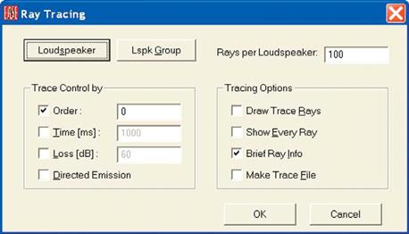
The Trace Control By section sets up the ray cutoff parameters for the simulation. Order determines how many reflections (bounces) the program will trace, before going on to the next ray. For reflection pattern studies no more than Third-Order
reflections (the maximum allowed by EASE JR) are needed.
Time establishes the length of the investigation. Lengths of 100 to 300 ms are typical for Ray Tracing, although shorter and longer times are possible. Loss cuts off the ray trace when the SPL has dropped the specified amount. This is typically set at 60 dB.
Directed Emission produces a weighted display used primarily to enhance simple reflection studies and Movie presentations.
The Tracing Options section determines how the rays will be displayed and whether or not they will be saved in a Trace file. When Draw Trace Rays is checked the program will draw the rays in the View Project screen. The rays will appear in rapid order on the screen as their paths are calculated by the program unless Show Every Ray is also checked. Checking Show Every Ray allows you to manually step through and observe the rays one by one as they are calculated.
When Brief Ray Info is checked, information on each Ray's path will flash across the Ray Tracing Control window while the window color flashes with the Ray's color.
Make Trace File saves the results of the simulation in a .trc Trace file for later viewing and analysis using View Trace File. View Trace File provides many more viewing options than Ray Tracing, including the ability to individually look at each loudspeakers reflection pattern.
Because of this, many experienced users will run an extensive trace file using all of the loudspeakers and then use View Trace File to ana-lyze the reflection patterns.
Let's try out Ray Tracing. For our first try, we'll use only the Main floor and Balc De-layL, Balc DelayR and Balc Delay Ctr loudspeaker and 500 rays. Press the Loudspeaker button and select them and insert 500 into the Rays per Loudspeaker fierld..
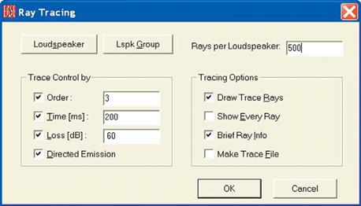
Then set the Order to 3, the Time to 200 ms and the Loss [dB] to 60 dB. We'll use Directed Emission, too, as we'll be using the Movie feature shortly. Note that you have to put a check in the Time [ms] and Loss [dB] boxes before you can fill in the fields. Then put checks into Draw Trace Rays and Brief Ray Info. The setup menu should look like this when you are done.
201
EASE 4.3 User’s Guide & Tutorial
Before you click on OK, make sure you can see the View Project window. You'll may want to rearrange the screen to get a better view of it.
Now click on OK. Notice that the room quickly fills up with yellow and magenta rays. The magenta color rays are the programs way of telling you that the time window is too short; that many of the rays are being cut off by the time limitation before their trace is completed. Do the Ray Trace again with the Time set to 400 ms and you'll see the magenta rays disappear, an indication they are now being allowed to finish their trace. Note that the Ray Tracing Control window summarizes the completed simulation.
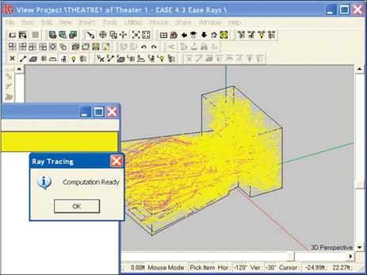
Also notice that as soon as you OK the Computation Ready prompt that appears at the end of the tracing routine the rays disappear. The same thing happens if you attempt to rotate or enlarge the room to get a better view of the rays. The way around this is to use the Make Trace File option, so most users will automatically make a Trace File every time they do an investigation. Its easier to work with and more flexible. Let's see how this works.
Open the Ray Tracing setup menu again; go to the Ray Tracing Control window and select Ray Tracing from the Rays pull down menu. This time select Make Trace File. Also, make sure Draw Trace Rays and Show Every Ray are not checked. All we want to do is to make a Trace File and forcing the program to draw the rays only slows down the computations. Click on OK. This will brings up a screen which al-lows you to name the file and choose its location (see below).
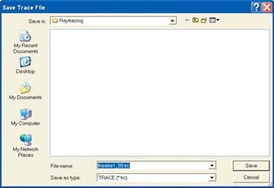
202
Chapter 9: Room Investigatiions
VIEW TRACE FILE
Note that the program will be placing the .trc Trace File in a Raytracing folder in the Theater 1 Project folder. The computation will start as soon as you click on Save.
As soon as the computation is completed, the View Trace File screen will appear.
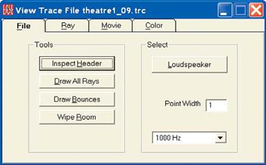
Note that with a click of a button you can draw all the rays or just the bounce points, or clear the display (Wipe Room). You can also turn the loudspeakers On and Off individually, enabling you to study each loudspeakers reflection pattern.
You can also rotate and/or enlarge the room at will to get a better view of the Ray's paths without losing the display.
Opening the Ray tab introduces the control menu shown below. Notice that it gives you the ability to step through each individual Ray and simultaneously displays information on the Ray's path and final SPL level.
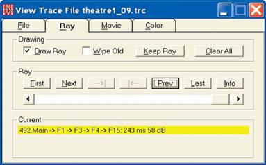
The scroll bar allows you to bypass the “ray by ray” review and “scroll” ahead or back to various parts of the Ray Tracing study; jump from Ray #10 to reflection Ray #200 for example.
203
EASE 4.3 User’s Guide & Tutorial
Another thing that can be done in View Trace File is to look at only the Rays generated within the loudspeaker -3 dB, -6 dB and -9 dB cov-erage cones. To try this out, click on the Ray Tracing Control window and press F9, or go to the File pull down menu and select the Options folder to open the following screen.
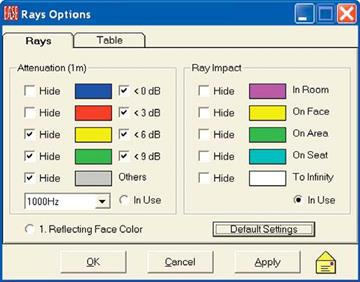
Note that the Default settings have the "In Use" box selected in the Ray Impact Colors section while In Use is not selected in the Attenua-tion (1m) section. Change this by clicking on the Attenuation (1m) "In Use" button and then OK the change. We will now be seeing the Rays based on the loudspeakers coverage cone, instead of by their normal Ray colors.
Note that the program allows you to Hide certain items. If we had wanted to show only the -3 dB cone, we would have checked the Hide boxes associated with -6 dB and -9 dB. Note that now when you draw (step through the Rays from a loudspeaker, you will see only the Rays generated within the loudspeakers -3 dB coverage cone. See below. Notice the number of reflections off the floor into the under bal-cony area.
You can also do the same to use only the -6 dB (actually -3 to -6) or -9 dB (actually -6 to -9) coverage cones or any combination of cones.
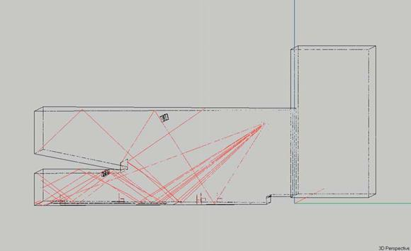
204
Chapter 9: Room Investigatiions
Another useful Ray Tracing feature of EASE 4.3 allows you to view the first order reflections from a specific Face in the same color as the Face color itself. This option is useful in determining the proper inclination of reflector or side wall panels and in studying reflections from troublesome Faces. Let's try it out using the right side wall and the ceiling in our model.
We'll start by changing the color of the ceiling Face to bright Red and 0ne side wall to a vivid Blue. This will make it easier for us to differen-tiate between the ceiling and side wall reflections. Face colors can't be changed in View Project, so we'll have to open the Edit Project module and change the colors there.
Open the Edit Project module, if it isn’t already open, and pick the ceiling Face and use the right mouse button to open the Mouse menu and then either select the Ceiling Face’s Properties folder and change the Face color to red or select Color and change it. Note that Ctrl + F2 would also open the color change dialog window. Follow the same procedure to change the color of the side wall to bright blue. Then
Check Data [F5] and return to the Ray Tracing module.
Use Ctrl + o to Acquire the changes you made in Edit Project. and then open the Options folder (F9) and select 1. Reflection Face Color Only. OK the change to return to the Rays control window and select Ray Tracing from the Rays pull down menu.
We want to study the reflections from the Main Loudspeaker off the one side wall and the ceiling. Insert 1 in the Trace Control Order field, 20 in the Rays per Loudspeaker field and select the Main Loudspeaker. Under Tracing Options select Make Trace File and proceed by fol-lowing the prompts.
You may want to rerun the simulation using a few more Rays or 2nd order reflections to gain further insight into the reflection pattern. It’s easy to do. The simulation shown below was made with 40 Rays and 2nd order reflections.
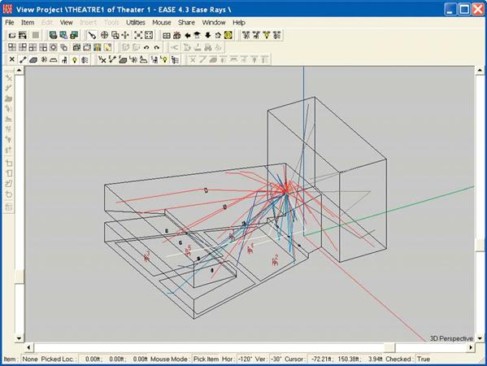
205
EASE 4.3 User’s Guide & Tutorial
MOVIES
Now, let's move on to the Movie mode. Click on the Movie tab to open the Movie Control screen shown below.
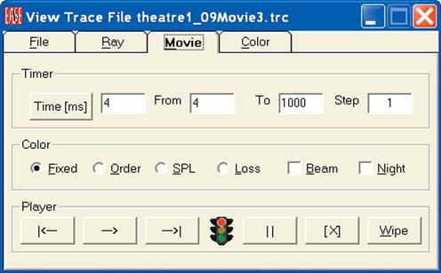
This screen allows you to control the movies length and the manner of presentation. The Fixed, Order, SPL and Loss buttons select the na-ture of the display. When SPL is checked, for example, the color of the rays will change with their SPL level.
When Beam is checked, the Movie will show the rays as beams. When it is not checked, only the wavefront will be shown. The Night but-ton turns the display window from its normal gray background color to a midnight blue that makes it easier to see the rays.
We will start by using Loss and Beam. Click on them to turn them On.
The control buttons on the bottom allow you to Start and Stop the movie, to Step Forward or Step Back through it and to Pause in the pres-entation. Wipe clears the display of any previous information.
Press the Start button and watch the rays spread out into the room. You will notice that the rays change color as they get further from the loudspeaker. They are changing color to show the dB loss.
The color codes for the Loss, Order and SPL displays can be found and changed under the Color tab
Our initial Trace File was was made using only 500 Rays from just the Main and delayed Balcony Loudspeakers, so you will not be able to see the Downfill, Under Balcony and Stage Lip Loudspeakers in the Movie. If you want to see them, you’ll need to make a new Trace File with all the Loudspeakers turned On. Note that the opening View Trace File window allows you to select what Loudspeakers will be used in the Movie. You probably will also want to increase the number of rays. Using more rays per loudspeaker enhances the Movie display.
The Movie graphic shown on the next page was made with 1000 rays per loudspeaker and just the Main loudspeaker and the delayed loudspeakesr in the lip of the stage turned On.
Note how the movie shows the delay as the sound expands into the room.
206
Chapter 9: Room Investigatiions
Room Mapping
So far in this Tutorial section we have used only Area Mapping. Room Mapping is similar to Area Mapping, except that it also allows Map-ping on the Room surfaces. The setup routine is identical except that you now have a choice of Mapping on just the Audience Area(s) or the Room surfaces (Faces) or on both.
Note that in Room Mapping EASE JR users can map only Direct SPL. EASE users have the option of mapping other measures on the Au-dience Areas and Room Surfaces (Faces). If you skipped the Overview section of the Tutorial, please return to pages 35-39 for a more de-tailed description of the two mapping methods.
Room Mapping is accessed by selecting Room Mapping under the Calculations pull down menu and following the same steps you followed in Area Mapping.. The graphic below shows a Direct SPL Map on the Audience Areas as it appears in Room Mapping.
Note that the graphic lists the Parameters used in the simulation in the upper left corner of the map. In our example, it shows that only the Main loudspeaker was used in the simulations. The other loudspeakers were all turned Off.
207
EASE 4.3 User’s Guide & Tutorial
The following graphic shows the Direct SPL mapped on all the room surfaces (Faces) with only the Main loudspeaker turned On and the Audience Areas turned Off.
Notice the black area behind the front Face of the balcony. It shows that this area is being shadowed by the balcony Face. This didn’t show in Area Mapping since the Audience Area is at ear height and is not being shadowed by the balcony Face.
The same holds true for the very rear of the Main floor, only in reverse. In Area Mapping someone seated in the rear seats of the main foor
Audiences Areas was shadowed from the Main Loudspeaker by the balcony. However, the floor under them is not in the shadowed area.
EASE is very precise.
The black areas in the back stage area are an indication that EASE had difficulty calculating a level because of the resolution used in the simulation. Change to a higher resolution and they will disappear.
You may wonder why the backstage Faces show an SPL level even though they do not have a “line of sight” view of the main Loud-speaker. How can they receive Direct Sound? Remember, we defined Direct Sound to include early reflections that arrive within 35 ms (a 35 ms Split Time). You are looking at the levels of the early reflections.
208